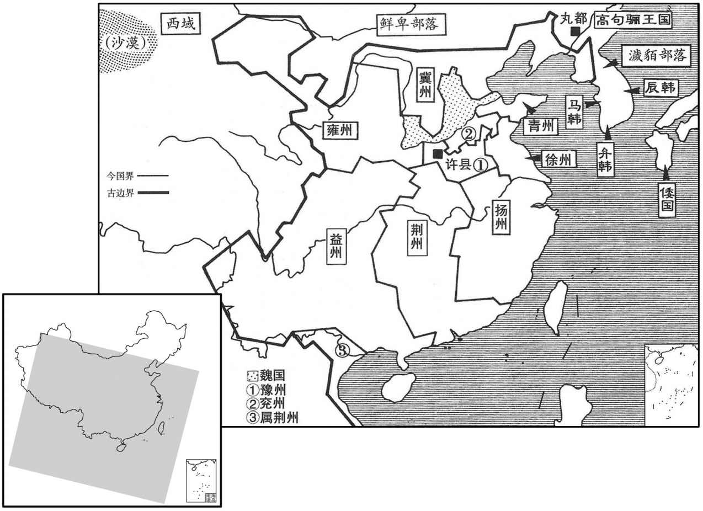
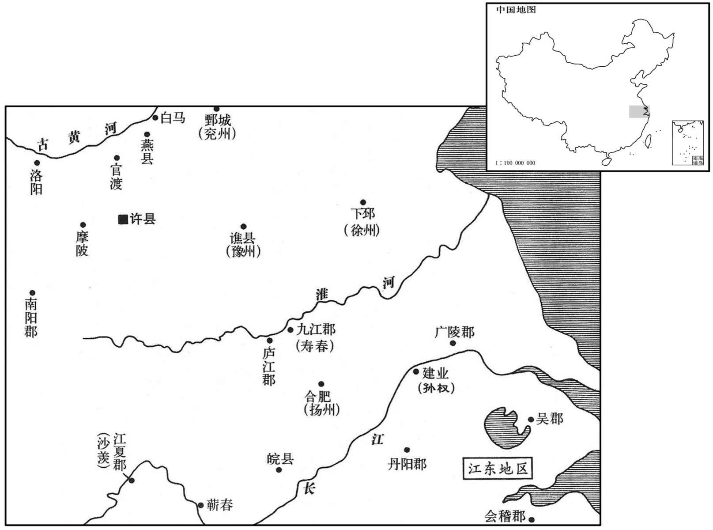
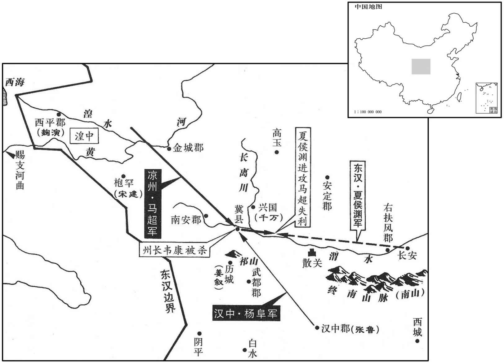

公元213年资治通鉴：本年记事、原文与白话对照
按原书编年位置阅读；追叙和史论不等于本年发生的事件。白话采用所据译本，缺译不以生成译文补齐。
卷66 · 本年记事
公元213年 · 汉孝献皇帝建安十八年
十八年〔（癸巳、二一三）〕
上传原文的注释括号有异常，字符原样保留；无法可靠划分的段落默认全文显示。
本年事件索引（现代整理）

本年形势与背景参考图

本年形势与背景参考图

本年形势与背景参考图
春，正月，曹操进军濡须口，号步骑四十万，攻破孙权江西营，〔大江东北流，故自历阳至濡须口皆谓之江西，而建业谓之江东。〕获其都督公孙阳。权率众七万御之，相守月余。操见其舟船器仗军伍整肃，叹曰：「生子当如孙仲谋；〔孙权，字仲谋。〕如刘景升儿子，豚犬耳！」权为笺与操，说：「春水方生，公宜速去。」别纸言：「足下不死，孤不得安。」操语诸将曰：〔语，牛倨翻。〕「孙权不欺孤。」乃彻军还。
春季，正月，曹操大军攻到濡须口，号称步、骑兵四十万人，攻破孙权设在长江西岸的营寨，俘获孙权部下的都督公孙阳。孙权率领七万人抵抗曹军，两军相持一个多月。曹操看到孙权的战船、武器精良，军队严整，叹息说：“生儿子应当像孙权，至于刘表的儿子，不过是猪狗！”孙权写信给曹操，说：“春水正要上涨，您应当赶快撤军。”另附的一张纸上写着：“您不死，我就不能安宁。”曹操对部将们说：“孙权不欺骗我。”于是撤军返回北方。
庚寅，诏并十四州，复为九州岛。〔十四州，司、豫、冀、兖、徐、青、荆、扬、益、梁、雍、并、幽、交也。复为九州岛者，割司州之河东、河内、冯翊、扶风及幽、并二州皆入冀州；凉州所统，悉入雍州，又以司州之京兆入焉；又以司州之弘农、河南入豫州，交州并入荆州，则省司、凉、幽、并而复禹贡之九州岛矣。此曹操自领冀州牧，欲广其所统以制天下耳。〕
庚寅（初三），献帝下诏，把全国的十四个州合并，恢复为九个州。
夏，四月，曹操至邺。
夏季，四月，曹操到达邺城。
初，曹操在谯，恐滨江郡县为孙权所略，欲徙令近内，〔近，其靳翻。〕以问扬州别驾蒋济，曰：「昔孤与袁本初对军官渡，徙燕、白马民，民不得走，贼亦不敢钞。〔事见六十三卷建安五年。燕县、白马县，皆属东郡。燕，春秋之南燕国也。贤曰：燕故城今滑州胙城县。钞，楚交翻。燕，于贤翻。〕今欲徙淮南民，何如﹖」对曰：「是时兵弱贼强，不徙必失之。自破袁绍以来，明公威震天下，民无他志，人情怀土，实不乐徙，〔乐，音洛。〕惧必不安。」操不从。既而民转相惊，自庐江、九江、蕲春、广陵，户十余万皆东渡江，〔蕲春县，本属江夏郡。沈约曰：吴立蕲春郡。此据吴志书之也。蕲，音祁。〕江西遂虚，合淝以南，惟有皖城。〔皖县，属庐江郡。贤曰：今舒州怀宁县。师古曰：皖，音胡管翻。〕济后奉使诣邺，〔使，疏吏翻。〕操迎见，大笑曰：「本但欲使避贼，乃更驱尽之！」拜济丹阳太守。〔丹阳郡已属孙权，济不得之郡也。〕
当初，曹操在谯县时，恐怕沿长江一带的郡县受到孙权的侵略，打算把百姓迁徙现内地，问扬州别驾蒋济对这个问题的看法，说：“从前，我与袁绍在官渡对峙时，曾迁徙过燕县与白马县的百姓，百姓没有走散，敌军也不敢抢掠。现在，我想迁徙淮河南岸的百姓，怎么样？”蒋济回答说：“当年我弱敌强，不迁徒就会失去那些百姓。自从攻破袁绍以来，您威震天下，百姓没有二心，而且人情依恋故乡，实在不愿意迁徙，我担心一定会使百姓不安。”曹操没有听从。不久，百姓互相转告，惊恐不安，从庐江、九江、蕲春到广陵，十余万户全部东渡长江。长江以西于是空无人烟，在合肥以南，只剩皖城还有百姓。后来，蒋济奉命出使到邺城，曹操接见他，大笑着说：“我本来只是想让百姓避开敌军，却反而把他们全驱赶到敌人那里去了！”任命蒋济为丹阳郡太守。
五月，丙申，以冀州十郡封曹操为魏公，〔时以冀州之河东、河内、魏郡、赵国、中山、常山、巨鹿、安平、甘陵、平原凡十郡为魏国。〕以丞相领冀州牧如故。又加九锡：大辂、戎辂各一，玄牡二驷；衮冕之服，赤副焉；〔毛苌曰：赤，人君之盛屦也；释，复履也。郑玄曰：复下曰。郑众曰：有三等，赤为上，冕服之。〕轩县之乐，六佾之舞；〔周礼：乐县之位，王宫县，诸侯轩县。郑众曰：宫县，四面县；轩县；去其一面。县，读曰悬。舞佾之数，天子八，诸侯六。杜预曰：八佾，八八六十四人；六佾，六六三十六人。服虔曰：天子八八，诸侯六八，大夫四八，士二八。宋傅隆曰：郑伯纳晋悼公女乐二八，晋以一八赐魏绛。此乐以八人为列之证也。佾，音逸。〕朱户以居；纳陛以登；虎贲之士三百人；鈇、钺各一；彤弓一，彤矢百，玈弓十，玈矢千；〔玈与卢同，黑色也。〕秬鬯一卣，珪、瓒副焉。
五月，丙申（初十），献帝封曹操为魏公，把冀州属下的十个郡作为他的封地，曹操仍继续担任丞相，兼任冀州牧。同时，加“九锡”：御用大车和兵车各一辆，各配有四匹黑色雄马驾车；龙袍、冠冕并配上红色的礼鞋；诸侯享用的三面悬挂的乐器和三十六个人演出的方阵舞；住宅的大门可以漆成红色；登堂的台阶可以修在檐下；虎贲卫士三百人；象征权威的兵器斧、钺各一柄；朱红色的弓一把，朱红色的箭一百支，黑色的弓十把，黑色的箭一千支；祭神用的美酒一罐，并配有玉圭和玉勺。
大雨水。
天降大雨。
益州从事广汉郑度闻刘备举兵，谓刘璋曰：「左将军悬军袭我，兵不满万，士众未附，军无辎重，〔重，直用翻。〕野谷是资，其计莫若尽驱巴西、梓潼民内、涪水以西，〔梓潼县，属广汉郡，汉武帝元鼎元年置，以县倚梓林而枕潼水为名；建安二十二年，刘备分立梓潼郡。班志，梓潼有五妇山，譢水所出，南入涪。应劭曰：涪水出广汉，南入汉。水经曰：涪水出广汉涪县西北，东至广汉与梓潼水合，又西南流，又南入于垫江。注云：涪水出广汉属国刚氐道徼外；梓潼水即五妇水也，同入于垫江，即所谓内水也。〕其仓廪野谷，一皆烧除，高垒深沟，静以待之。彼至，请战，勿许，久无所资，不过百日，必将自走，走而击之，此必禽耳。」刘备闻而恶之，〔恶，乌路翻。〕以问法正。正曰：「璋终不能用，无忧也。」璋果谓其群下曰：「吾闻拒敌以安民，未闻动民以避敌也。」不用度计。
益州从事、广汉人郑度听到刘备起兵的消息，对刘璋说：“左将军刘备孤军深入，远道来袭，他部下士兵不到一万人，而且将士并未全心归附他，军队又没有辎重，只能靠抢掠田野的庄稼为食。因此，最好的办法是把巴西与梓潼境内的百姓全部驱赶到内水、涪水以西，把巴西与梓潼仓库中的粮食物资以及田野里的庄稼全部烧掉，咱们高垒深沟，静待变化。刘备率军前来挑战，咱们坚守不出。他们无处抢掠粮草，不过一百天，必然会自动撤退，等他们后退时咱们再出击，一定可以捉到刘备。”刘备听到消息后，十分忧虑，向法正询问对策，法正说：“刘璋最终不会采用郑度的计策，您不必担心。”刘璋果然对部下说：“我听说过抵抗敌人以保护百姓；从未听说要迁徙百姓来躲避敌人的。”不用郑度的计策。
璋遣其将刘踭、冷苞、张任、邓贤、吴懿等拒备，皆败，退保鼦竹；〔踭，姑回翻，又胡隈翻。冷，鲁杏翻，姓也。按本或作「泠」，泠，音鲁经翻。鼦竹县，属广汉郡；唐属汉州；九域志，在州东北九十三里。〕懿诣军降。〔降，户江翻；下同。〕璋复遣护军南阳李严、江夏费观督鼦竹诸军，〔复，扶又翻；下同。夏，户雅翻。费，父沸翻。〕严、观亦率其众降于备。备军益强，分遣诸将平下属县。刘踭、张任与璋子循退守雒城，〔雒县，属广汉郡，雒水所出；唐为汉州治所。〕备进军围之。任勒兵出战于鴈桥，〔鴈江，在雒县南，曾有金鴈，故名为鴈桥。〕军败，任死。
刘璋派部将刘、冷苞、张任、邓贤、吴懿等抵抗刘备，都被击败，退守绵竹，吴懿向刘备大军投降。刘璋又派护军南阳人李严、江夏人费观统帅驻在绵竹的各路军马，但李严、费观也率领自己的部下向刘备投降。刘备军队的势力更加强大，分派部下将领去占领周围各县。刘、张任与刘璋的儿子刘循退守雒城，刘备进军把雒城围住。张任率军出城，在雁桥与刘备军大战，张任军战败，张任战死。
秋，七月，魏始建社稷、宗庙。
秋季，七月，魏国开始建立祭祀土神与谷神的社稷坛和曹氏祖先的宗庙。
魏公操纳三女为贵人。〔自此以后，曹操不书姓而冠以国。操三女，长宪，次节，次华；节后立为皇后。〕
曹操进献三个女儿给献帝作妃嫔，都被封为贵人。
初，魏公操追马超至安定，闻田银、苏伯反，引军还。参凉州军事杨阜言于操曰：「超有信、布之勇，甚得羌、胡心；若大军还，不设备，陇上诸郡非国家之有也。」〔陇西、南安、汉阳、永阳，皆陇上诸郡也。献帝起居注，分汉阳、上郡为永阳。〕操还，超果率羌、胡击陇上诸郡县，郡县皆应之，惟冀城奉州郡以固守。〔冀县，属汉阳郡，郡及凉州刺史治焉。〕
当初，曹操追赶马超到安定，听到田银、苏伯起兵的消息，率军返回。参凉州军事杨阜对曹操说：“马超有韩信、英布那样勇猛，很得羌人和胡人的信服，如果大军撤回，又不加以防备，陇山以西的各郡恐怕就不能再属于朝廷了。”曹操撤军后，马超果然率领羌人，胡人进攻陇山以西的各郡县，各郡县都起来响应，只有作为凉州州府及汉阳郡府所在地的冀城坚守不降。
超尽兼陇右之众，张鲁复遣大将杨昂助之，〔复，扶又翻。〕凡万余人，攻冀城，自正月至八月，救兵不至。刺史韦康遣别驾阎温出，告急于夏侯渊，〔夏侯渊时屯长安。〕外围数重，〔重，直龙翻。〕温夜从水中潜出。明日，超兵见其迹，遣追获之。超载温诣城下，使告城中云：「东方无救。」〔陇右在西方，操在关东，故曰东方。〕温向城大呼曰：〔呼，火故翻。〕「大军不过三日至，勉之！」城中皆泣，称万岁。超虽怒，犹以攻城久不下，徐徐更诱温，冀其改意。〔诱，音酉。〕温曰：「事君有死无二，而卿乃欲令长者出不义之言乎！」超遂杀之。
马超兼并了陇山以西的所有部队，张鲁又派大将杨昂率军援助马超，共有有一万余人，进攻冀城，从正月直攻到八月，朝廷救兵也没有到。凉州刺史韦康派别驾阎温出城，向夏侯渊求救。马超军在冀城外包围了好几层，阎温乘夜从水里秘密游出城去。第二天，马超部下士兵看到足迹，派人追踪，把阎温捉住。马超把阎温带到城下，命令阎温告诉城中守军说：“东方没有救兵。”阎温向城中大喊：“大军不过三天就会来到，你们努力坚守！”城中守军都流下眼泪，高呼万岁。马超虽然恼怒，但由于冀城很久攻不下，仍慢慢地进一步引诱阎温，希望他回心转意。阎温说：“奉事君主，只有一死，没有二心。而你竟想让长者说出那种违背道义的话吗！”马超于是杀死阎温。
已而外救不至，韦康及太守欲降。〔降，户江翻。〕杨阜号哭谏曰：「阜等率父兄子弟以义相励，有死无二，以为使君守此城，〔号，户刀翻。为，于伪翻。〕今柰何弃垂成之功，陷不义之名乎！」刺史、太守不听，开城门迎超。超入，遂杀刺史、太守，自称征西将军、领并州牧、督凉州军事。
过了些时候，外面的救兵仍没有来，刺史韦康及太守打算投降，杨阜大哭着劝阻他们说：“我们率领自己的父兄子弟，以大义互相勉励，誓死没有二心，就是为了协助你们守住此城。现在，怎么能放弃这唾于可得的功勋，陷入不义的罪名呢？”刺史、太守中听杨阜的劝阻，打开城门迎接马超。马超入城后，就杀死刺史、太守，自称征西将军，兼任并州牧、督凉州军事。
魏公操使夏侯渊救冀，未到而冀败。渊去冀二百余里，超来逆战，渊军不利。氐王千万反应超，屯兴国，〔氐王千万，略阳清水氐种也，其后是为仇池之杨。兴国，城名。〕渊引军还。
曹操命令夏侯渊率军援救冀城，还没到，冀城已经投降。夏侯渊率冀城还有二百余里时，马超出军迎战，夏侯渊作战失利。这时，号称氐王的氐人首领千万又起兵响应马超，驻军兴国，夏侯渊率军撤回。
会杨阜丧妻，就超求假以葬之。〔丧，息浪翻。，假，居讶翻，休假也。求假，犹古之请告请急也。〕阜外兄天水姜叙为抚夷将军，拥兵屯历城。〕〔水经注，历城在西县，去仇池一百二十里，后改为建安城。杜佑曰：历城，在今同谷郡西七里，去仇池九十里。宋白曰：晋置仇池郡于历城。今为成州。〕阜见叙及其母，歔欷悲甚。〔歔，音虚；欷，许既翻，又音希，泣余声也。〕叙曰：「何为乃尔﹖」阜曰：「守城不能完，君亡不能死，亦何面目以视息于天下！〔目之视物，一出入息之顷，则一瞬。〕马超背父叛□，虐杀州将，背，蒲妹翻。将，即亮翻。〕岂独阜之忧责，一州士大夫皆蒙其耻。君拥兵专制而无讨贼心，此赵盾所以书弒君也。〔赵盾，晋卿赵宣子也。左传，赵穿攻灵公于桃园，宣子未出山而复，太史书曰：﹁赵盾弒其君。」以示于朝。宣子曰：「不然。」对曰：「子为正卿，亡不越境，反不讨贼，非子而谁！」〕超强而无义，多衅，易图耳。」〔易，以豉翻。〕叙母慨然曰：「咄！伯奕，韦使君遇难，亦汝之负，岂独义山哉！〔咄，当没翻。姜叙，字伯奕；杨阜，字义山。负罪也。难，乃旦翻。〕人谁不死，死于忠义，得其所也。但当速发，勿复顾我；我自为汝当之，〔复，扶又翻。为，于伪翻。〕不以余年累汝也。」〔累，力瑞翻。〕叙乃与同郡赵昂、尹奉、武都李俊等合谋讨超，又仗人至冀，结安定梁宽、南安赵衢使为内应。超取赵昂子月为质，〔质，音致。〕昂谓妻异曰：〔据皇甫谧列女传，异，士氏女也。〕「吾谋如是，事必万全，当柰月何﹖」异厉声应曰：「雪君父之大耻，丧元不足为重，〔丧，息浪翻。〕况一子哉！」
正在这时，杨阜的妻子去世，杨阜向马超请假去安葬妻子。杨阜的表兄、天水人姜叙担任抚夷将军，率军驻在历城。杨阜见到姜叙和姜叙的母亲，抽泣不止，十分悲痛。姜叙说：“你为什么这样悲痛？”杨阜说：“守城而没能守住，长官被杀而不能同死，我还有什么脸活在世上！马超背叛父亲与皇上，残酷杀死本州的长官，这岂是我杨阜一个人忧心自责的问题，一州的士大夫都因此蒙受到耻辱。你拥有重兵，受命全权管理这一地区，而没有讨伐逆贼之心，从前，赵盾正是因为这样做而被史官记载为弑君的。马超虽然强大，但不讲道义，弱点很多，容易对付。”姜叙的母亲慨然说：“好了！姜叙，韦刺史遇难，也有你的责任，难道只是杨阜一个人吗！谁能不死，能死于忠义，就是死得其所。你只应快些行动，不要再管我；我自会为你担当，不会以我的余年牵累你。”姜叙就与同郡人赵昂、尹奉、武都人李俊等人，共同商议讨伐马超，又派人到冀城，结交安定人梁宽、南安人赵衢，让他们做内应。马超命令赵昂交出儿子赵月作为人质，赵昂对妻子士异说：“我们已经如此谋划，事情一定能成功，应当把赵月怎么办？”士异厉声回答：“能昭雪君父的大耻，就是掉脑袋也不足惜，何况一个儿子！”
九月，阜与叙进兵，入卤城，〔卤城，当在西县、冀县之间。〕昂、奉据祁山，以讨超。〔水经注：祁山，在嶓冢之西七十许里，山上有城，极为险固，汉水径其南。又曰：祁山，在上邽西南二百四十里。杜佑曰：祁山，在今同谷郡长道县东十里。余据今西和州长道县南十里有祁山，古来南北二岈，有万余家。诸葛亮表言「祁山去沮五百里，有人万户」者，此也。〕超闻之，大怒，赵衢因谲说超，使自出击之。〔谲，古穴翻。说，输芮翻。〕超出，衢与梁宽闭冀城门，尽杀超妻子。超进退失据，乃袭历城，得叙母。叙母骂之曰：「汝背父之逆子，杀君之桀贼，〔背父，谓马腾在邺，不顾而反；杀君，谓杀韦康也。背，蒲妹翻。〕天地岂久容汝，而不早死，敢以面目视人乎！」超杀之，又杀赵昂之子月。杨阜与超战，身被五创。超兵败，遂南奔张鲁。〔被，皮义翻。创，初良翻。考异曰：杨阜传云「十七年九月」，武帝纪，「十八年超在汉阳，复因羌、胡为害。十九年正月，赵衢等讨超，超奔汉中。」按姜叙九月起兵，超即应出讨，超出，衢等即应闭门，不应至来年正月。盖魏史书捷音到邺之月耳。杨阜传误也。〕鲁以超为都讲祭酒，〔鲁为五斗米道，自号师君。其来学者，初名鬼卒，后号祭酒，各领部众。都讲祭酒者，鲁使学者都习老子五千文，置都讲祭酒，位次师君。〕欲妻之以女。〔妻，七细翻。〕或谓鲁曰：「有人若此，不爱其亲，焉能爱人！」〔焉，于虔翻。〕鲁乃止。操封讨超之功，侯者十一人，赐杨阜爵关内侯。
九月，杨阜与姜叙进兵，进入卤城，赵昂、尹奉占据祁山，以讨伐马超。马超听到消息，大怒，赵衢乘势编造理由，劝马超自己率军去进攻杨阜等人。马超出城后，赵衢与梁宽等关闭冀城城门，把马超的妻子儿女全部杀死。马超进退失据，于是袭击历城，捉到姜叙的母亲。姜叙的母亲痛骂马超，说：“你这个背叛父亲的逆子，杀害长官的恶贼，天地岂能长久容你，你不早死，还敢见人！”马超杀死她，又把赵昂的儿子赵月杀死。杨阜与马超大战，身受五处重伤。马超被杨阜等打败，就向南投奔张鲁。张鲁任命马超为都讲祭酒，打算把自己的女儿嫁给马超。有人对张鲁说：“像这样的人，不爱自己的父母，怎么能爱别人！”张鲁才打消嫁女的念头。曹操封赏讨伐马超的功臣，封十一个人为侯爵，杨阜被封为关内侯。
冬，十一月，魏初置尚书、侍中、六卿；以荀攸为尚书令，凉茂为仆射，〔凉，姓；茂，名。〕毛玠、崔琰、常林、徐奕、何夔为尚书，〔魏置五曹尚书，吏部、左民、客曹、五兵、度支。〕王粲、杜袭、卫觊、和洽为侍中，〔自是以后，侍中遂以四人为定员。〕锺繇为大理，〔大理，汉廷尉之职。〕王修为大司农，袁涣为郎中令，行御史大夫事，〔郎中令，汉光禄勋之职。〕陈群为御史中丞。〔时以御史大夫为三公，以中丞为御史台主。〕
冬季，十一月，魏国开始设置尚书、侍中和六卿等官职。任命荀攸为尚书令，凉茂为尚书仆射，毛、崔琰、常林、徐奕、何夔为尚书，王粲、杜袭、卫觊、和洽为侍中，钟繇为大理，王为大司农，袁涣为郎中令，并代理御史大夫事务，陈群为御史中丞。
袁涣得赏赐，皆散之，家无所储，乏则取之于人，不为皦察之行，〔皦，吉了翻。行，下孟翻。〕然时人皆服其清。时有传刘备死者，群臣皆贺，惟涣独否。
袁涣得到赏赐，都散给亲戚、朋友，家中没有积蓄。当家用不足时，就向别人索取，从来不故作清白，详察小事，然而当时人都佩服他的清廉。这时，有刘备已死的传言，群臣都为此道驾，只有袁涣不这样做。
魏公操欲复肉刑，令曰：「昔陈鸿胪以为死刑有可加于仁恩者，〔胪，陵如翻。〕御史中丞能申其父之论乎﹖」〔陈群父纪为汉大鸿胪。〕陈群对曰：「臣父纪以为汉除肉刑而增加于笞，〔事见十五卷文帝十三年。〕本兴仁而死者更众，所谓名轻而实重者也。名轻则易犯，〔易，以豉翻。〕实重则伤民。且杀人偿死，合于古制；至于伤人，或残毁其体而裁剪毛发，非其理也。若用古刑，使淫者下蚕室，盗者刖其足，则永无淫放穿踰之奸矣。〔下，遐稼翻。刖，音月。穿者，穿穴隙；踰者，踰垣墙。〕夫三千之属，〔周穆王作甫刑，墨罚之属千，剕罚之属五百，宫罚之属三百，大辟之罚其属二百，五刑之属三千。〕虽未可悉复，若斯数者，时之所患，宜先施用。汉律所杀殊死之罪，仁所不及也，其余逮死者，可易以肉刑。可易以肉刑。如此，则所刑之与所生足以相贸矣。〔贸，易也。〕今以笞死之法易不杀之刑，是重人支体而轻人躯命也。」当时议者，唯锺繇与群议同，余皆以未可行。操以军事未罢，顾众议而止。
曹操打算恢复肉刑，下令说：“从前，大鸿胪陈纪认为死刑有仁慈的一面，御史中丞陈群，能申说你父亲的理论吗？”陈群回答说：“我父亲陈纪认为，汉代废除肉刑而增加笞刑，本来是出于仁慈的目的，但死于鞭杖之下的人更多，这就是所谓名义上减轻，而实质上加重，名义上轻，则使百姓容易犯法；实质上重，则伤害百姓。而且，杀人偿命，是符合古代法制的；至于伤人，或者残害身体，或者剪去头发，者不合理。如果恢复古代刑法，对犯强奸罪的施用宫刑，把偷盗者的脚砍去，就会永远没有淫荡和挖洞越墙偷盗的罪犯了。古代的三千条刑法，虽然不能全部恢复，但像上在所举的几种罪，正是现在的社会问题，应当先施行。汉朝法律，对判处斩首的罪人，不能讲求仁爱；除此之外，其余判死刑的人，可以改判肉刑。这样，施加刑罚与保存生命就足以相抵了。现在，以鞭笞致死的刑法替换不杀人的肉刑，是重视人的肢体，而轻视人的生命。”当时参与讨论的人，只有钟繇与陈群意见相同。其余人的都认为不能恢复肉刑。曹操因为四方征战还没有停止，顾虑众人的意见，停止了恢复肉刑的打算。